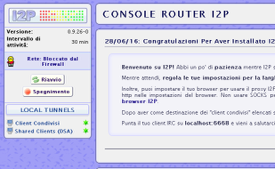

Nel panorama internet si sente di parlare di I2P. L'I2P non permette la navigazione nella Clearnet.
A differenza di Tor che richiede gli ONION router, l'I2P è basata sulla tecnologia peer-to-peer.
È interessante sapere che I2P a differenza di Tor non forza l'uso di HTTPS poiché cripta il
traffico ancora prima che arrivi all'HTTP.
I2P è scritto in Java quindi è necessario JavaRuntimeEnviroment.
Una volta avviato, il software farà tutto da solo.
In realtà è già tutto funzionante ma per essere sicuri consiglio di visitare
la CONSOLE ROUTER I2P a questo indirizzo qui

Basta configurare il Browser con i seguenti proxy:
A questo punto la domanda che tutti si fanno è: Cosa faccio?
L'I2P non permette (quasi) mai di connetersi alla rete esterna.
Sono siti con estensione .i2p.
Sono accessibili solo tramite il circuito I2P e fanno parte della darknet.
A questo indirizzo qui per avere il proprio sito I2P.
Irc2p è il nome del tunnel che viene creato nel momento in cui si avvia per la prima volta I2P. Non è altro che un server.
All'interno del circuito I2P ci sono 2 eepsites che offrono servizi di microblogging http://id3nt.i2p e http://jisko.i2p
Il nome del progetto è I2PShark.
Questo può essere risultare lento poiché deve criptare il tutto.